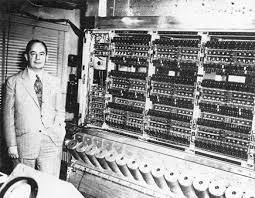

Neumann János élete
Neumann János, híres magyar születésű matematikus, a digitaális számítógép feltalálója. Ismertté vált a kvantummechanika elméleti kutatásairól is.
Magánélete
Betekintés Neumann János gyerekkori életébe, milyen volt a családi élete, hol élt, milyen iskolákban végzett, stb.
Magánélete
Érdekességek
Egyéb érdekes információ Neumann János életéről, dokumentum filmek, milyen egyéb dolgok érdekelték Neumann-t.
Érdekességek

Pályája
Mi volt a fő foglalkozása, mi az a Neumann-elv, milyen projektekben vett részt, mi a kapcsolata a Mannhattan-tervvel?
Pályája